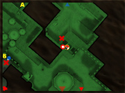

Thursday, August 24 2006
Valve showed more of Half-Life 2: Episode Two, Team Fortress 2, and Portal at the Leipzig Games Convention this week. Our new trailers with new gameplay footage will be made available via Steam media downloads within the next few days.
Counter-Strike: Source was updated this afternoon with several new features, including a re-vamped in-game radar system and a new version of the map Train (now featuring HDR lighting), along with a few other changes. Fire the game up now to check out the new map and features.
 Newly released this week, Techland's GTI Racing and X-Pand Rally. If you're in North America, check out the GTI racing Logitech MOMO steering wheel bundle!
Newly released this week, Techland's GTI Racing and X-Pand Rally. If you're in North America, check out the GTI racing Logitech MOMO steering wheel bundle!
Introversion's Uplink is now available on Steam. Play as a hacker for hire -- breaking into rival computer systems, stealing research data, sabotaging companies, laundering money, erasing evidence, or framing innocent people.